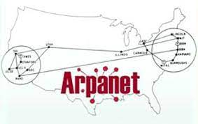

En 1969 se crea ARPANET por el Departamento de defensa de Estados Unidos como medio de comunicación para los diferentes organizaciones del país

En 1982 se crea protocolos de internet (TPC/IP).
En 1989 se crea World wide web conocido como las WWW
Haz clic en la imagen para volver al inicio